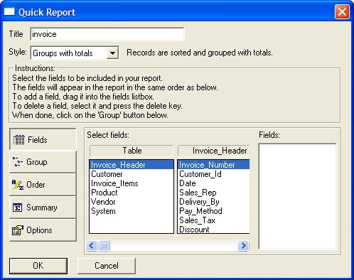
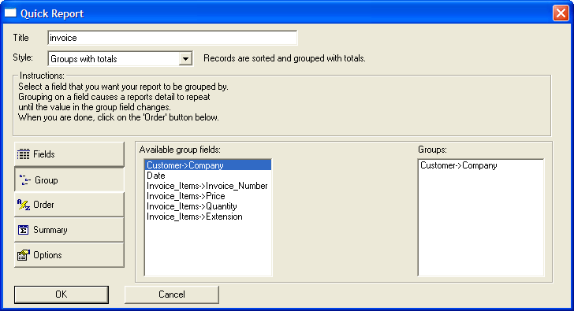
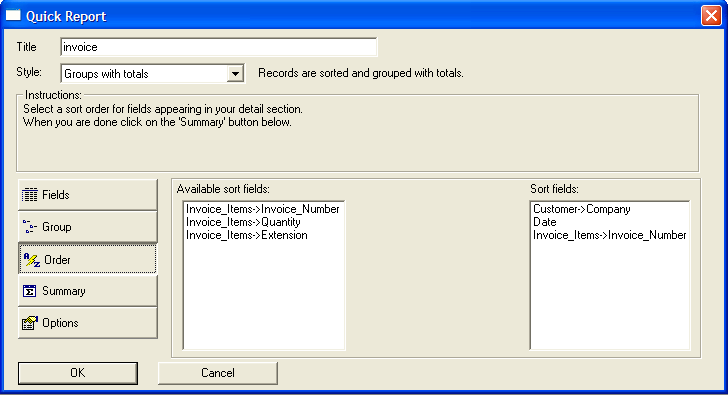
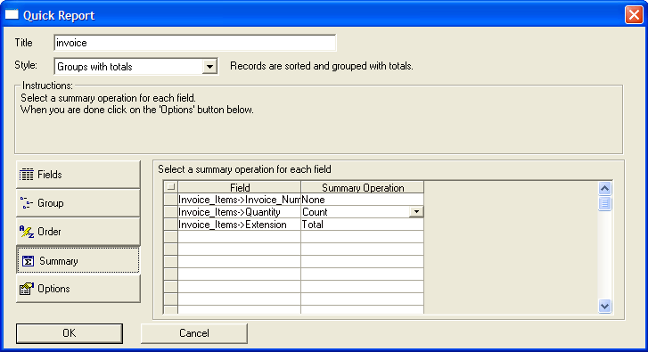

Creating Reports
There are two approaches to creating reports.
Display the Report tab of the Control Panel.
Click New to display the New Report dialog box.
Select the table or set that will provide the data for the report.
Click either:
Quick Report - to have Alpha Anywhere create a report for you. You can then edit the layout it creates, or use it as-is.
Start from a blank report - use the Report Editor to design a new report or edit an existing report.
Click OK.
Alpha Anywhere's Quick Report lets you choose from several pre-formatted Report styles. By filling in dialog box controls, you instruct Quick Report on how you want your report to look.
Display the Control Panel.
Display the Report tab.
Click New....
In the New Report dialog box click OK.
In the Quick Report dialog box, enter the report's title in the Title box. In the Style drop-down list box, choose the style of the Report you want to create. Your choices are:
"Tabular": Data is listed in a table; fields comprise the columns, and records comprise the rows.
"Repeating Form": A Repeating Form Report presents the data vertically, with each successive field below the previous field, and a gap between each record.
"Groups with Totals": By creating a Groups with Totals Report, you can divide your data into logical collections of records, called groups. Calculations can be made for each group.
"Summary Report": You can use a Summary Report to display a condensed view of data in a table or set. Summary Reports operate like Groups With Totals Reports, except that data from individual records are not listed. Instead, you see only the results of Summary calculations performed on your data.
Click the Fields button.
If you are working with a set, make a selection from the Table list.
Drag a field from the fields table's field list to the Fields list at right.
Repeat steps 7 through 9 for all the report's fields.

If you are working with a set, click the Group button.
Drag the fields that you want to group on from the Available group fields list to the Groups list.

Click the Order button.
Drag the fields (in order of sort priority) that you wish to sort on from the Available sort fields list to the Sort fields list.

If you are working with a set, click the Summary button.
Under Summary Operation, indicate which type of summary (or no summary) you want for each eligible field.

Optionally, click Options and modify the formatting of your report.
Click OK. Alpha Anywhere creates your report, and leaves you in the Report Editor.
See Also
Print Topics, Report Topics, Using the Report Editor